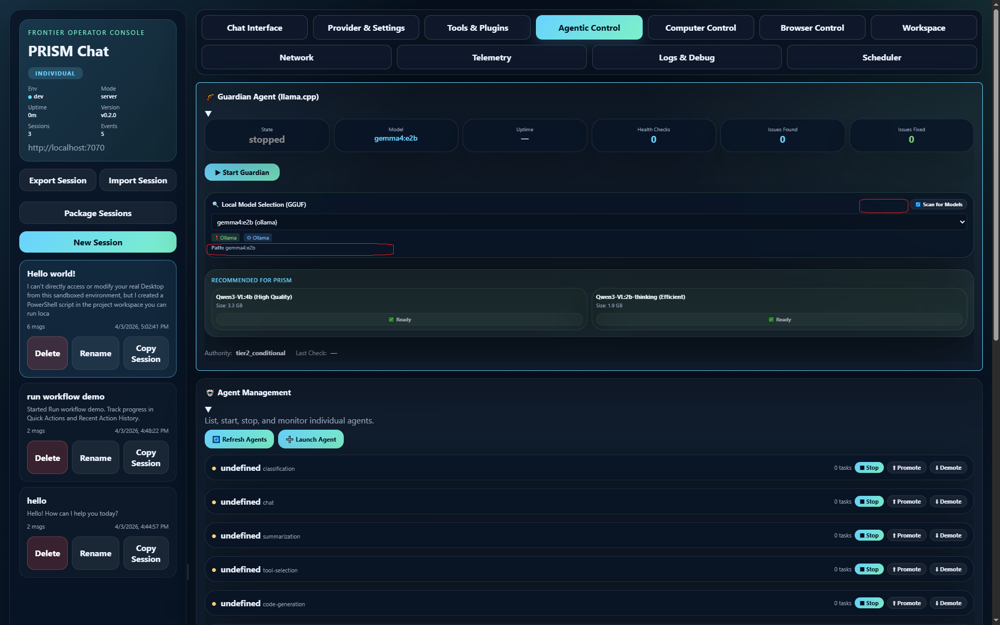
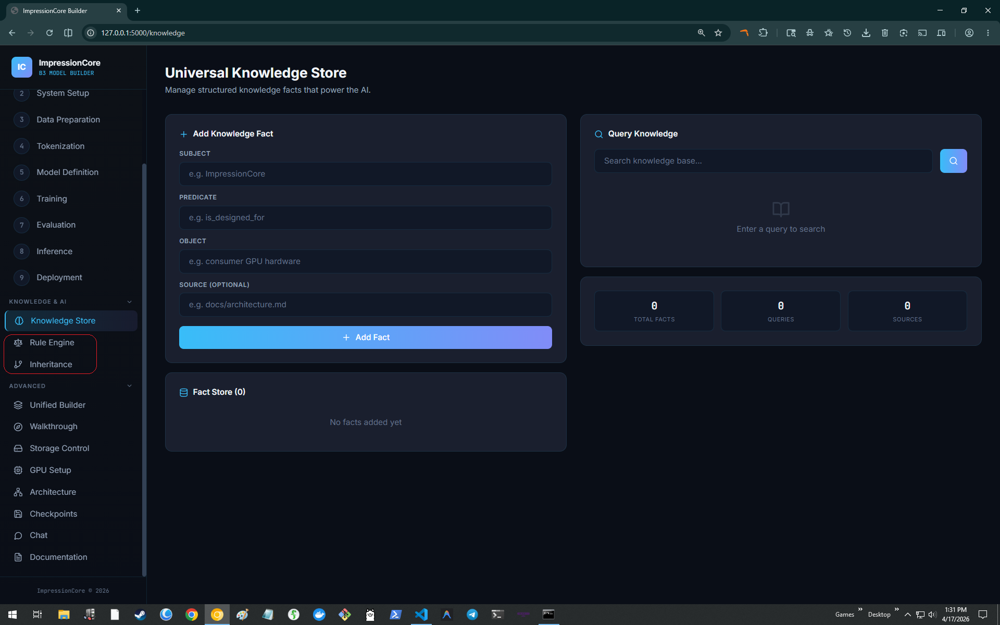

Agent0Core & The 7-Server MCP Ecosystem
ImpressionCore merges cognitive language models with autonomous agentic execution. Powered by the Agent0Core layer, the Guardian safety supervisor, and a standardized 7-server Model Context Protocol (MCP) tool gateway.

Autonomous Local Intelligence with GGUF Supervision
Zero reliance on external proprietary APIs. Agent0Core runs local quantized LLMs through llama.cpp to supervise tasks, call tools, and audit system health.
🦙 GGUF LlamaCppSupervisor
Local high-performance quantization supervisor. Executes quantized GGUF weights locally on consumer CPUs and GPUs with zero data leakage or cloud telemetry.
🛡️ The Guardian Security Supervisor
Real-time cryptographic firewall. Audits every incoming prompt and outgoing tool call against Kirk LaSalle's 10 Permanent Active Directives using the Dual-Layer Constitutional Framework.
💾 Persistent Vector Memory
Episodic and semantic recall engine. Indexes user interactions, research sessions, and tool outputs into verifiable local vector databases with non-repudiation hashing.
🛡️ Interactive Security: Dual-Layer Governance Enforcement
The Guardian agent enforces security by evaluating all agent actions against two distinct, synchronized layers:
Permanent_Active_Directives.txt in a golden-bordered statutory block.
# 1. Launch Agent0Core CLI with Local GGUF Supervisor python agent0core/run_cli.py # 2. Launch Agent0Core Glassmorphism Web Dashboard python agent0core/run_ui.py
The 7-Server Model Context Protocol Ecosystem
A unified, secure microservice topology located in `.mcp/`, giving models standardized access to datasets, automation, documentation, and web intelligence.
impressioncore-goliath
The master unified gateway implementing the Bridge Pattern. Aggregates all sub-MCP servers into a single discoverable endpoint with rate limiting, logging, and security verification.
ids-mcp
The ImpressionCore Documentation System server. Performs semantic and keyword search across 1,618 indexed markdown documents, technical specs, and architecture logs.
impressioncore-eds
Educational Dataset Discovery server. Connects to 40+ academic, scientific, and open-access dataset sources for automated distillation training curriculum curation.
impressioncore-ipa
Intelligent Process Automation and academic research scraper. Automates multi-step research extraction, literature review generation, and code refactoring tasks.
impressioncore-dpa
Digital Project Assistant & UI Accessibility server. Analyzes Natural Language Understanding (NLU) requirements, generates interface schemas, and checks WCAG compliance.
impressioncore-vrgc
Autonomous Runtime Monitor and Health Telemetry engine. Watches GPU thermals, VRAM ceilings, process uptime, and generates non-repudiation audit certificates.
web-search-mcp
Privacy-preserving web intelligence ingestion server. Discovers up-to-date web pages, strips advertising payloads, and converts raw HTML into clean semantic markdown for live model grounding.
Universal Knowledge Store (UKS) Semantic Engine
The foundation of lifelong digital companion memory: indexing knowledge relationships and semantic associations into a unified queryable graph.
